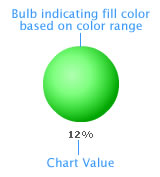

| Elements of the gauge |
A bulb gauge consists of the following elements: Given below is a simple bulb gauge diagram: |
|  |
|
The bulb gauge is defined by minimum and maximum values. Within that scale you can create various ranges to classify your data. There can be any number of ranges as you wish to. For each range, you’ll have to specify the minimum and maximum limits, a name for the range and the hex color for the range.
Note: Each color range should have its own unique range index. That is say, if a range is defined as 0-50, the next range should have the minimum value as 50 necessarily. Similarly, if the upper limit of the chart is 100, the last range should have max value as 100 for the chart to function properly. The value textbox helps you show the value indicated by the gauge in numeric terms. You can also opt to hide it.Let’s now make a sample bulb gauge. |